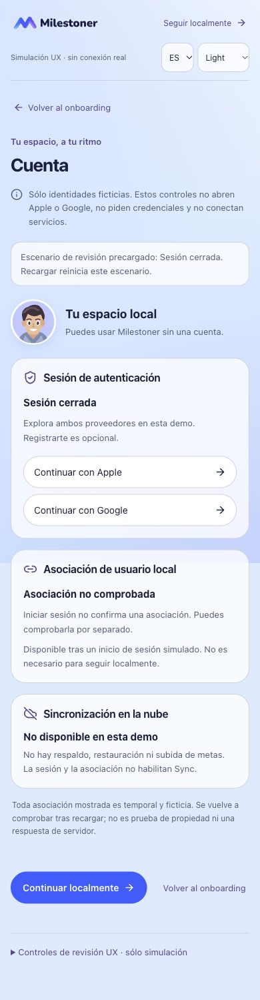
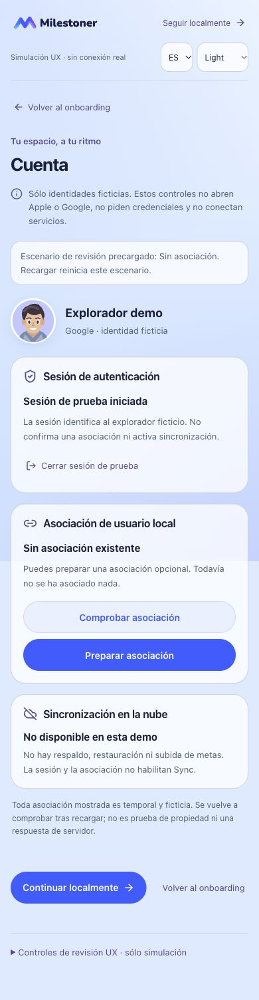
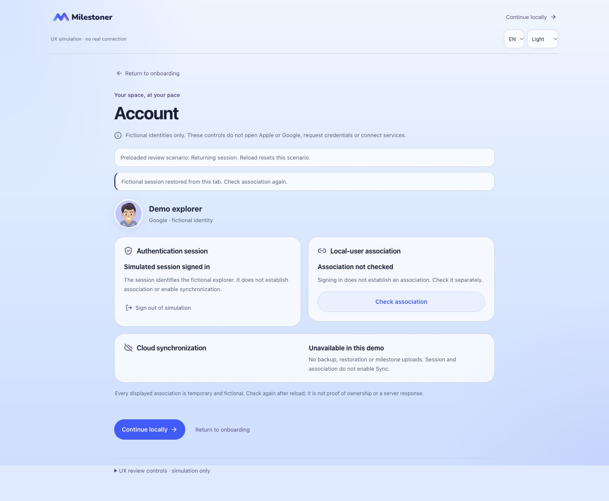
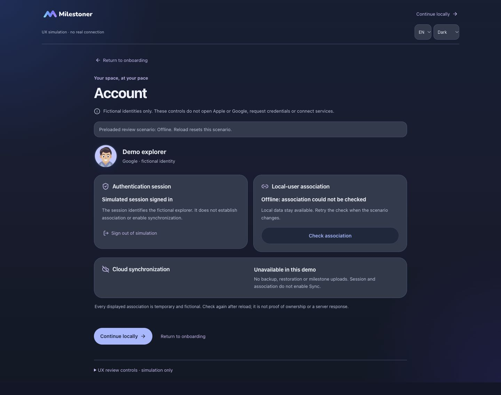
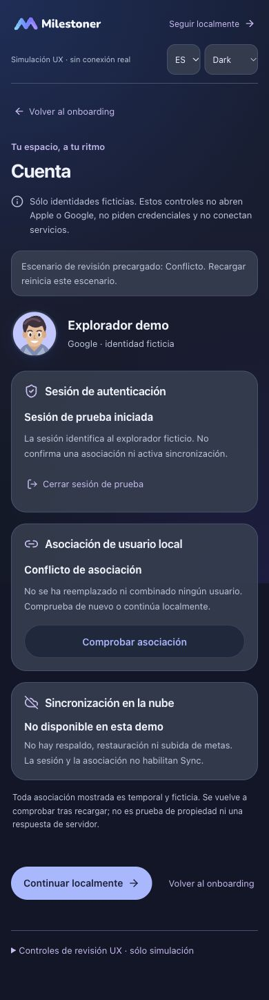

PENDING OWNER VISUAL AND FUNCTIONAL REVIEW. Simulación interactiva de sesión Apple/Google, comprobación y asociación explícita. Sin OAuth, credenciales, servicios externos ni cambios en los datos de la app. Publicar esta candidata no constituye aceptación UX ni nativa.
Recorrido libre: continuar con un proveedor → mostrar resultado simulado → comprobar asociación → mostrar resultado → preparar → revisar/cancelar o confirmar → mostrar resultado. Los pasos en curso avanzan explícitamente para revisión; no hay una petición real ni una espera artificial.
La invitación tras confirmar el primer ejemplo conserva Continuar localmente y añade acceso secundario a Cuenta. Volver al onboarding retoma su propio borrador. Cerrar sesión aquí no borra Projects, Perfil, Universo, registros ni el ejemplo confirmado.
Estos enlaces precargan estados ficticios; recargar reinicia el escenario indicado. Los controles de revisión, separados al final de Cuenta, permiten cambiar resultados y contexto. En el recorrido libre sólo se recupera la sesión ficticia de la pestaña; no se guarda una asociación positiva ni un consentimiento.
Sesión, asociación y sincronización son estados distintos. Iniciar sesión no asocia, sube, respalda, restaura ni mezcla datos. Un resultado ambiguo exige comprobar antes de reintentar. La confirmación caduca al cambiar sesión/contexto o salir; no se reemplazan asociaciones incompatibles. Toda observación es temporal y ficticia, sin prueba de titularidad. Sync sigue no disponible.





Pendiente: aceptación visual y funcional de esta simulación y futuras decisiones de copy, soporte y recuperación. No se certifican autenticación real Apple, aislamiento de dos cuentas, JWT expirado, release nativo, dispositivos físicos o lector de pantalla hablado. Sin implementación V2.6. Los originales privados y la documentación interna permanecen excluidos.